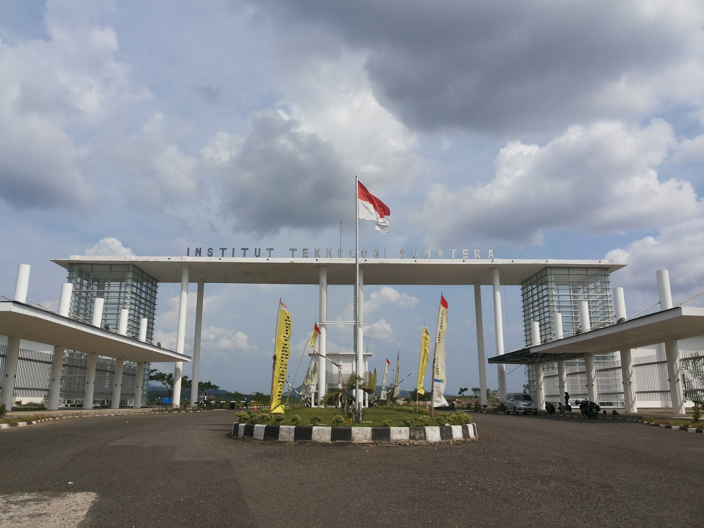

Pendataan Mahasiswa Baru
Selamat datang di Portal Resmi Pendataan Mahasiswa Baru ITERA. Kami dengan penuh kehormatan menyambut Anda yang berpotensi untuk bergabung dalam komunitas akademik kami. Melalui platform ini, kami mengundang para calon mahasiswa ITERA untuk mengisi formulir pendataan diri mereka, sehingga kami dapat memberikan perhatian dan dukungan terbaik dalam proses penerimaan. Kami mengakui bahwa informasi yang Anda bagikan adalah aset berharga dalam membangun masa depan pendidikan Anda. Setelah mengisi formulir, Anda dapat melihat nama Anda bersama teman-teman sejawat dalam daftar mahasiswa baru di halaman berikutnya. Kami berkomitmen untuk memberikan pendidikan berkualitas tinggi dan menyambut Anda dengan tangan terbuka. Selamat datang di ITERA, tempat awal perjalanan pendidikan yang luar biasa!